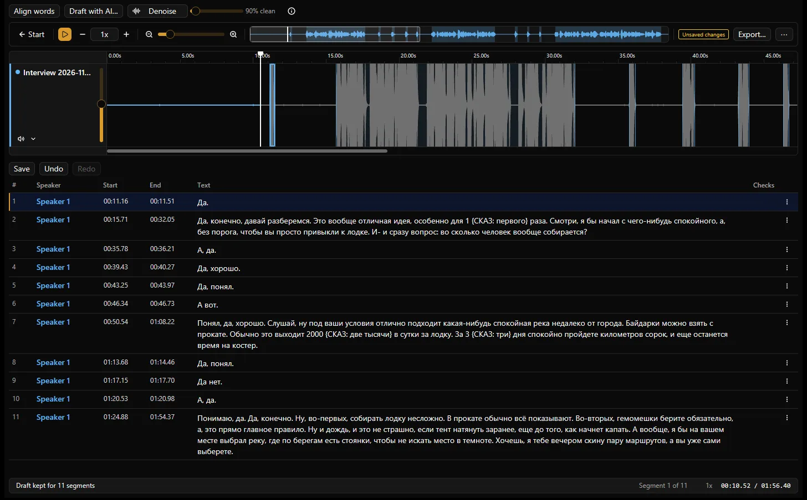
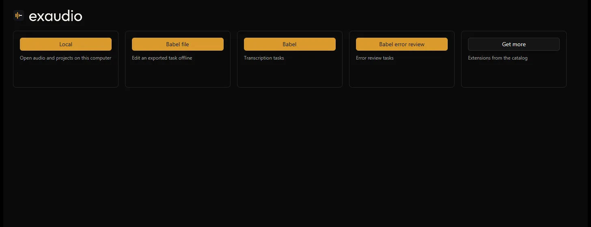
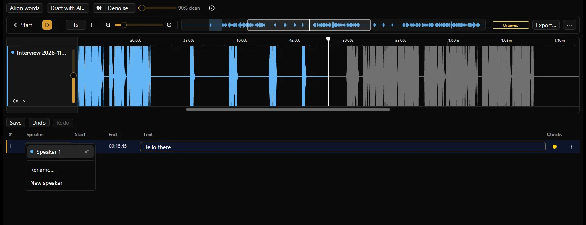

Бесплатный открытый редактор транскрипций для Windows
Из звука — в слова.
Сегменты со спикерами и таймингом поверх волны. Слушайте, правьте, делите, назначайте — в одном нативном окне. Локальные проекты не требуют аккаунта; черновик ИИ — по желанию.
Windows 10 и 11, x64. Если SmartScreen пишет «Система Windows защитила ваш компьютер», нажмите Подробнее → Выполнить в любом случае: Exaudio пока не подписан.
Все загрузки: Установщик · Portable · SHA256SUMS · Все выпуски · Alpha
Или из терминала
irm https://github.com/Nominy/exaudio/releases/latest/download/Exaudio-win-Portable.zip -OutFile Exaudio.zip; Expand-Archive Exaudio.zip Exaudio; .\Exaudio\Exaudio.exe
PowerShell. Распаковывает рядом и запускает редактор; настройки и снимки восстановления — в %APPDATA%\Exaudio. Обновления предлагаются внутри приложения.
Нужны Git, Rust из rust-toolchain.toml, инструменты MSVC C++ с Windows SDK и CMake. Подробности — в руководстве разработчика.

Почему Exaudio
Редактор транскрипций, построенный вокруг звука, а не текстовое поле с плеером сбоку.
Сегменты и спикеры
У каждой реплики — спикер, начало и конец. Делите по курсору, объединяйте соседние, подрезайте по звуку, переименовывайте и добавляйте спикеров из меню строки.
Таймлайн и волна
По дорожке на каждый файл, масштабируемая волна, обзорная полоса, скорость, повтор и отмена/повтор. Выделите участок волны — получится сегмент.
Локальный ИИ
Выравнивание слов, черновик расшифровки, заполнение пропусков, шумоподавление. На вашей видеокарте через WebView2/WebGPU или на удалённом сервере. Любой результат — черновик для проверки.
Проверки
Колонка «Проверки» отмечает проблемы по сегментам — пустой текст, наложения на дорожке, лишние пробелы — и предлагает безопасные исправления. Расширения добавляют свои правила.
Импорт и экспорт
Импорт SRT, WebVTT или обычного текста на дорожку; экспорт SRT, WebVTT или TXT. Папка проекта хранит копию аудио и все сегменты.
Нативный, открытый
Один Rust-бинарник на GPUI, MIT. Без аккаунта и телеметрии; приложение только спрашивает GitHub, нет ли новой версии.
Режимы
На экране «Начало» — плитки; Local первый и ничего не требует. Сервисные режимы и каталог — это расширения.
Local
Откройте WAV, MP3, FLAC, OGG, M4A, MP4, WebM, MKV или сохранённый проект. Работает без сети.
Babel
Вход по телефону, e-mail или коду под-аккаунта, задачи, проверки Babel, отправка. Отдельная плитка открывает экспортированное задание офлайн.
Расширения
Команды, панели, проверки, форматы и режимы. Устанавливаемые — WASM в песочнице на Rust SDK, перечислены в открытом каталоге, каждое с явными разрешениями.



Вопросы
Что-то ещё? Создайте issue на GitHub.
Нужен аккаунт?
Нет. Режим Local открывает аудио и проекты на этом компьютере и работает без сети. Babel — необязательный сервисный режим со своим входом.
Сколько стоит ИИ?
Локальная обработка бесплатна: она идёт на вашей видеокарте через WebView2/WebGPU после установки среды и моделей (около 2,4 ГБ, скачиваются один раз). Удалённый сервер держит автор, бесплатно; он может быть занят, а аудио или текст передаются на него. Бэкенд выбирается в настройках ИИ.
Какие форматы поддерживаются?
Аудио: WAV, MP3, FLAC, OGG, M4A, MP4, WebM и MKV (декодирование зависит от кодека внутри). Расшифровки: SRT, WebVTT и обычный текст на вход и выход. Редактируемый источник — папка проекта.
Почему Windows SmartScreen предупреждает?
Пакет не подписан сертификатом, поэтому SmartScreen показывает предупреждение о неизвестном издателе. Скачивайте только из Releases Nominy/exaudio, сверяйте SHA256SUMS и не отключайте защиту Windows.
Где хранятся проекты?
Проект — папка, которую вы выбираете при сохранении: project.json и audio/ с копией аудио каждой дорожки, поэтому он самодостаточен и переносим. Снимки несохранённой работы, настройки и установленные расширения — в %APPDATA%\Exaudio.
Как обновить или удалить?
Установленная версия предлагает обновления внутри приложения. Удаление — через «Параметры → Приложения → Exaudio». Portable-версия — это папка: замените её новым архивом или удалите.
Как сообщить об ошибке?
Создайте issue на GitHub: версии Exaudio и Windows, режим и расширения, шаги воспроизведения и текст ошибки. Используйте синтетическую запись; не прикладывайте ключи, приватные задания и чужое аудио.